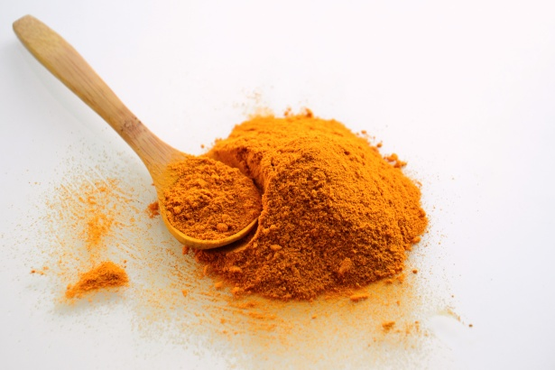

Turmeric
Common Name: Tumeric
Genus Species: Curcuma longa
Family: Zingiberaceae
Origin: Southern Asia
Cultivation: India (especially the south central states), southern and eastern China,
Taiwan, Philippines, Java, Haiti, Jamaica, Peru
Description: The root of Curcuma longa is ground up to provide the yellow dye and flavor
known as haldi in India and turmeric in the West. It is cultivated in several countries
in south-eastern Asia, and is widely used as an appetite stimulant and digestive in
various sauces, and as a rice colorant and a standard curry constituent, or as an
inexpensive substitute for saffron. The spice has become more popular recently as a
source of the yellow turmerone, curcumin: this is believed to have antioxidant,
anti-inflammatory and anticholesterolemic properties. Herbalists advise that it be used
to prevent heart disease and cancer, and to treat HIV infection and arthritis. In
Chinese medicine, it is used to control hemorrhage, and to treat various diseases such
as asthma and coryza. Curcumin is often added to food products as a colorant and to
prevent their spoilage by oxidation.
